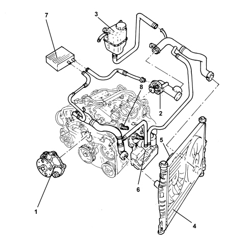
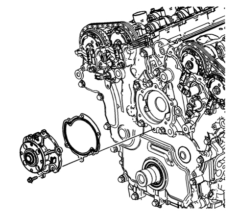
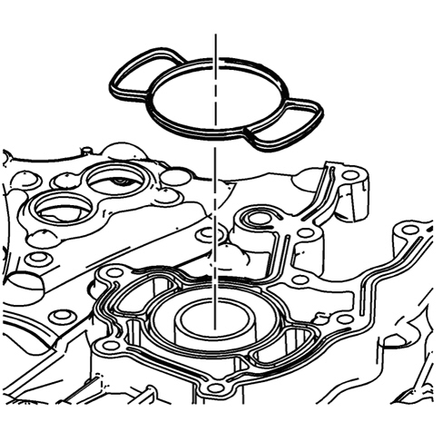
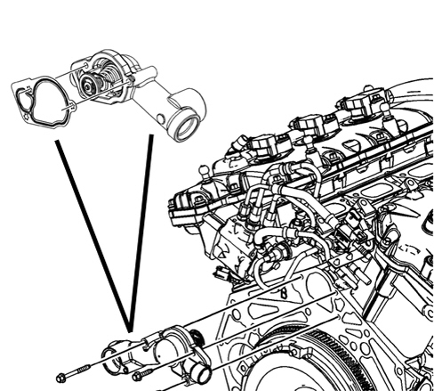

INTRODUCTION - ENGINE COOLING
- Path
- Descriptions > 10 ENGINE > 1088 ENGINE COOLING > INTRODUCTION - ENGINE COOLING
- Kind
- system description
- Applies to
- engines: 3.2 JTS; all production periods
- Interactive page
- https://sloeber94.github.io/elrnDB-aBrrSpdr/en/#/946001204
Applies to: engines: 3.2 JTS; all production periods
Cooling system

1. Water pump
2. Thermostat
3. Supply reservoir
4. Radiator
5. Fans
6. Water/engine oil heat exchanger
7. Passenger compartment heater
8. Coolant temperature sensor
Function:
cooling of the engine and the engine oil.
Cooling circuit components
A feature of this engine is that the water pump is located in a housing in the metal timing cover.

The seal on the crankcase side is ensured by a gasket which has a special "butterfly" shape; the pump impeller rotates by means of a pulley driven by the services belt.

The thermostat unit is connected to the crankcase, flywheel side, by means of bolts, as can be seen in the diagram below; the engine coolant temperature sensor is located on the left cylinder head, outside.
